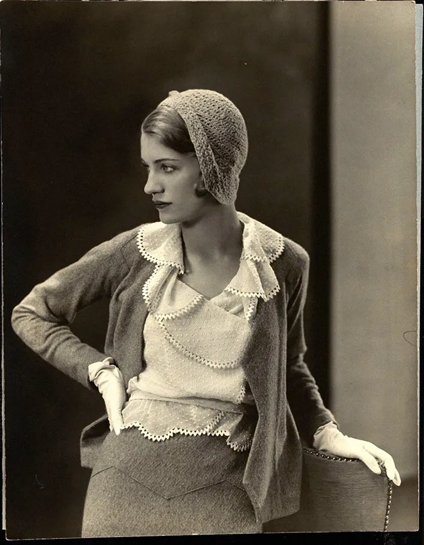

Bienvenue sur Mode, le premier site de mode en vogue sur la toile !
Découvrez les dernières tendances, des conseils de mode, et une galerie de photos avec des femmes qui ont marquées l'histoire de la photoraphie de mode !
Conseils de Mode
Galeries de photo
Des femmes qui ont marqué l'histoire de la photographie ?!

Louise Dahl-Wolfe
Sarah Moon
Ellen von Unwerth